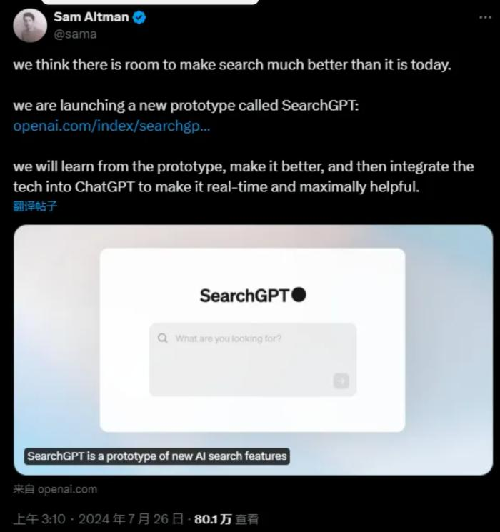

关于ChatGPT最新模型的见解
SearchGPT
北京时间7月26日凌晨，OpenAI发布了名为"SearchGPT"的新人工智能搜索功能的临时原型。
"我们认为今天的搜索还有改进空间。"OpenAI创始人山姆·奥特曼在X上表示，Open AI将从这款原型产品中学习并对其进行改进，然后该技术集成到ChatGPT中，使其实时且最大限度地发挥作用。
- 实时搜索：SearchGPT能够实时搜索互联网，提供最新的信息和数据。
- 自然语言理解：用户可以用自然语言提问，SearchGPT能够理解并给出相关答案。
- 多源整合：SearchGPT可以从多个来源收集信息，并进行综合分析。
- 个性化结果：根据用户的搜索历史和偏好，提供更加个性化的搜索结果。
- 深度分析：不仅提供表面信息，还能进行深度分析和见解提炼。
- UI界面； 界面简介，相比于其他搜索引擎，这是我见过的界面最简洁的一个。
总的来说,SearchGPT确实给我们的搜索带来了许多便利，但这不明摆着抢饭碗吗?
未来Microsoft的Bing搜索引擎，以及Google搜索引擎该何去何从？又该如何发展，这将会是Microsoft和Google将面临的最大一个挑战。
但也有美中不足的地方:
- 有些时候只能使用英文回复。
- 准确性一般，失误的概率很大。
- 用户体验不够丰富,例如:
- PPT
- 思维导图
- 归纳总结
由于本人未获取到OpenAI官方的内侧资格，以上资料均来自互联网🌍
OpenAI官网-关于SearchGPT